Cellular Respiration
การหายใจระดับเซลล์ทำให้มีการปลดปล่อยพลังงานออกมาจากโมเลกุลของสาร โดยพลังงานจะเก็บไว้ใน1.พันธะเคมีในรูปของ ATP
2.โคเอนไซม์ในรูป NaOH และ FADH2
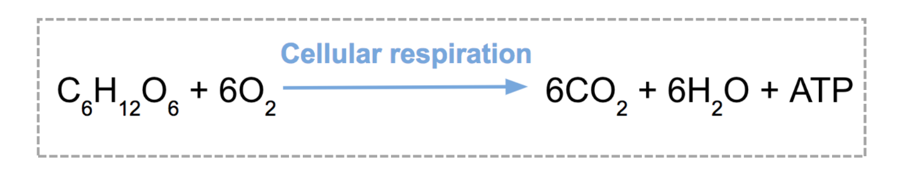
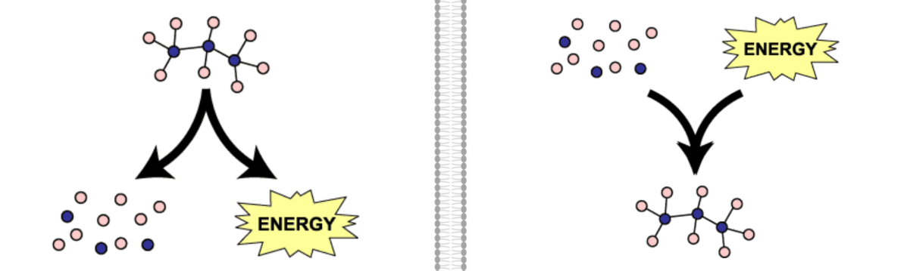
กระบวนการและปฏิกิริยาที่ควรรู้ !
กระบวนการ
1.แคทาบอลิซึม (Catabolism) เป็นกระบวนการสลายสารจากสารโมเลกุลใหญ่เป็นสารโมเลกุลเล็ก เช่น การสลายอาหารภายในเซลล์เป็นต้น2.แอนาบอลิซึม (Anabolism) กระบวนการสร้างหรือสังเคราะห์สารจากสารโมเลกุลเล็กให้เป็นสารโมเลกุลใหญ่ เช่น การสังเคราะห์ด้วยแสง การสังเคราะห์โปรตีน เป็นต้น
โดยเมื่อกระบวนการทั้้งสองมารวมกันเราจะเรียกว่า เมทาบอลิซึม (Metabolism)
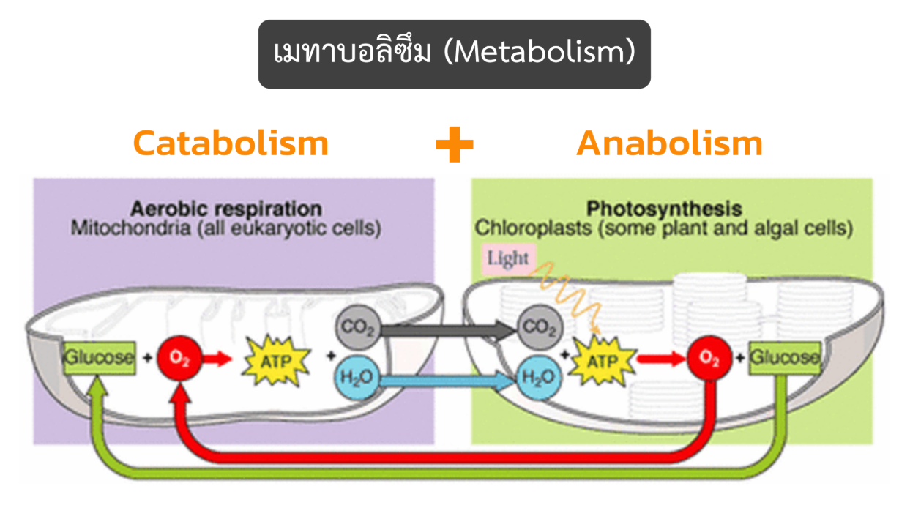
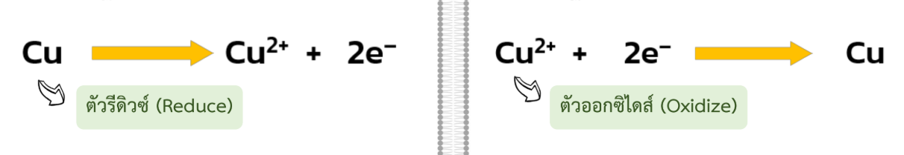
ปฏิกิริยา
1.ปฏิกิริยาออกซิเดชัน (Oxidation Reaction) เป็นปฏิกิริยาที่สารมีการจ่ายอิเล็กตรอนออกไป มักเป็นปฏิกิริยาการสลายสารหรือแคทาบอลิซึม2.ปฏิกิริยารีดักชัน (Reduction Reaction) เป็นปฏิกิริยาที่สารมีการรับอิเล็กตรอนเข้ามา มักเป็นปฏิกิริยาการสร้างสารหรือแอนาบอลิซึม
ปฏิกิริยาที่เกี่ยวข้องกับการรับและจ่ายอิเล็กตรอนนี้จะเรียกรวมกันว่า Oxido-reduction หรือปฏิกิริยารีดอกซ์ (Redox Reaction)
สิ่งที่ควรรู้ก่อนเข้าเนื้อหา
ATP (Adenosine Triphosphate)
เป็นสารพลังงานสูงที่เก็บพลังงานไว้ในพันธะโมเลกุลของ ATP ประกอบด้วยน้ำตาลไรโบส เบสอะดีนีน และหมู่ฟออสเฟต 3 โมเลกุลพันธะที่เชื่อมระหว่างหมู่ฟอสเฟตมี 2 พันธะ เรียกว่า Phosphoanhydride Bond เป็นพันธะที่เก็บพลังงานไว้มากเมื่อพันธะดังกล่าวถูกสลายด้วยน้ำในปฏิกิริยาไฮโดรไลซิส จะปลดปล่อยพลังงานออกมา 7.3 Kcal/mol
ADP-ATP Cycle
ส่วนใหญ่เซลล์จะมีการสลาย ATP เป็น ADP และ ADP จะจับกับหมู่ฟอสเฟต ได้เป็น ATP วนเป็นวัฏจักรไป ซึ่งกระบวนการสร้าง ATP จาก ADP และหมู่ฟอสเฟตอิสระ (Inorganic Phosphate; P) เรียกว่า Phosphorylation
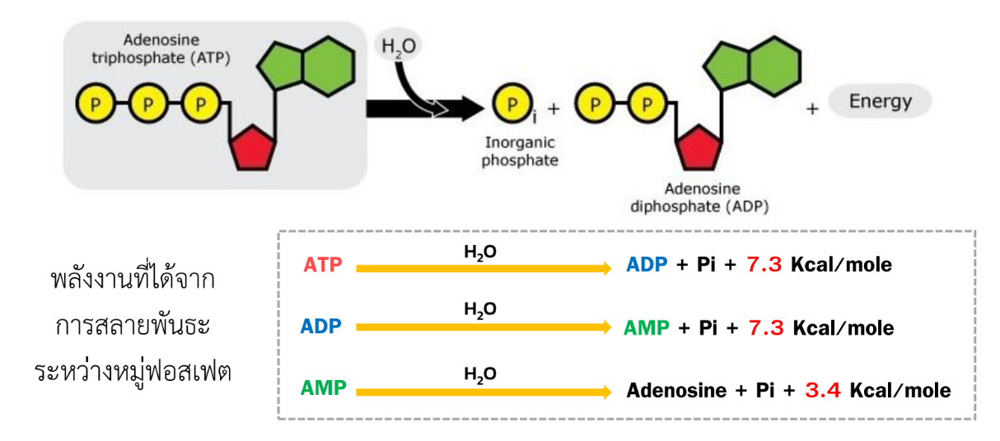
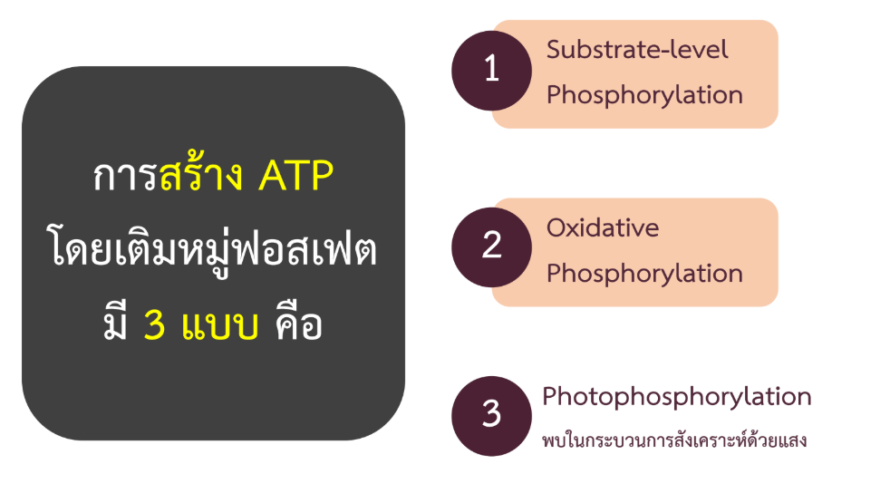
Substrate-level Phosphorylation และ Oxidative Phosphorylation
Substrate-level Phosphorylation เป็นกาารเคลื่อนย้ายหมู่ฟอสเฟตจากสารอื่นๆ มาเติมให้กับโมเลกุลของ ADP โดยตรง พบได้ในเซลล์ เช่น ไกลโคไลซิส วัฏจักรเครปส์Oxidative Phosphorylation เป็นการเติมหมู่ฟอสเฟตให้โมเลกุลของ ADP โดยเกิดปฏิกิริยาออกซิเดชันควบคู่ไปพร้อมกันด้วย พบได้ในเซลล์ เช่น การถ่ายทอดอิเล็กตรอน (ETC)
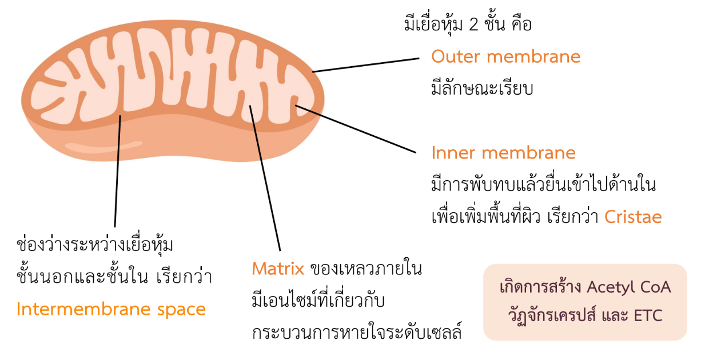
การหายใจระดับเซลล์
1.Aerobic Cellular Respiration
การสลายอาหารแบบใช้ออกซิเจน ออกซิเจนเป็นตัวรับอิเล็กตรอนตัวสุดท้ายในกระบวนการ ETC และได้ ATP มากกว่า2.Anaerobic Cellular Respiration
การสลายอาหารแบบไม่ใช้ออกซิเจน เรียกว่า การหมัก (Fermentation) เกิในสภาวะที่ไม่มีออกซิเจนจะได้ ATP น้อยกว่า
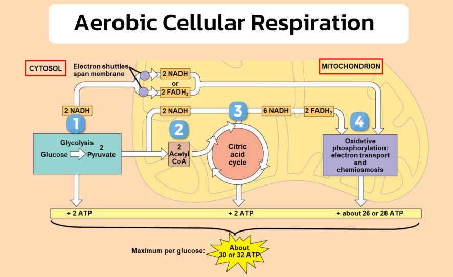
การหายใจแบบใช้ออกซิเจน มี 4 ขั้นตอนดังนี้
1. ไกลโคไลซิส (Glycolysis) โดยจะเกิดใน Cytosol2. การสร้างอะซีทิล โคเอนไซม์ เอ (Acetyl Coenzyme A Formation)
3. วัฏจักรเครปส์ (Krebs Cycle)
4. การถ่ายทอดอิเล็กตรอน (Electron Transport Chain; ETC)
โดยขั้นตอนที่ 2 ถึง 4 จะเกิดใน Mitochondria
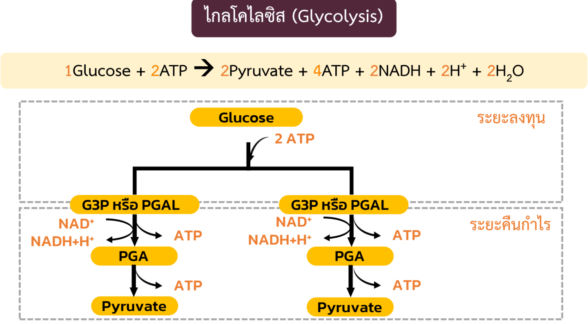
Glycolysis
-ไกลโคไลซิส เป็นกระบวนการสลายกลูโคสที่พบได้ในสิ่งมีชีวิตเกือบทุกชนิด เกิดขึ้นในไซโทซอล-เปลี่ยนโมเลกุลของน้ำตาลกลูโคสที่มีคาร์บอน 6 อะตอม ให้เป็นสารประกอบคาร์บอน 3 อะตอม ชื่อว่า ไพรูเวต (Pyruvate)
-ในระหว่างขั้นตอนการเปลี่ยนแปลงจะมีการปลดปล่อยพลังงานออกมา ซึ่งพลังงานเหล่านี้จะถูกเก็บไว้ในรูปของ ATP และ NADH
ไกลโคไลซิสประกอบไปด้วย 10 ปฏิกิริยาย่อย แบ่งเป็นช่วงลงทุน(Preparatory Phase)และช่วงคืนกำไร(Payoff Phase)
โดยหากให้สรุปคือ ในขั้นตอนไกลโคไลซิส กลูโคสจะถูฏเปลี่ยนเป็นกรดไพรูวิก จำนวน 2 โมเลกุลและถูกนำเข้าสู่ไมโทคอนเดรียแล้วเข้าสู่ขั้นตอนการสร้าง Acetyl Coenzyme A ต่อไป
Acetyl CoA Formation
การสร้าง Acetyl CoA จะเกิดขึ้นในเมทริกซ์ของไมโทคอนเดรีย Acetyl Coenzyme A นี้จะเป็นสารตั้งต้นสำหรับวัฏจักรเครปส์ต่อไป โดยกรดไพรูวิก 2 โมเลกุลถูกนำเข้าสู่ไมโทคอนเดรียและเข้าสู่กระบวนการสร้าง Acetyl Coenzyme A 2 โมเลกุล
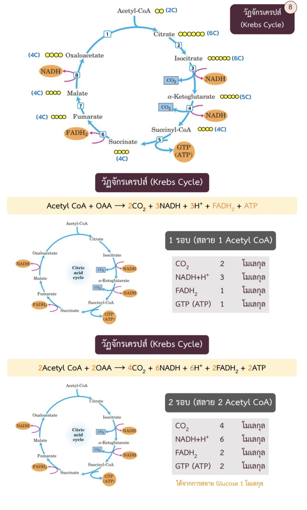
Krebs Cycle
-อาจเรียกได้อีกชื่อหนึ่งว่า Tricarboxylic Cycle (TCA Cycle)-ค้นพบโดย Hans Krebs
-อาศัยการเร่งปฏิกิริยาของเอนไซม์ต่างๆ เกิดต่อเนื่องกันเป็นวงจร จนสุดท้ายถูกสลายเป็นแก๊สคาร์บอนไดออกไซด์
-วัฏจักรเครปส์เปรียบเสมือนจุดศูนย์กลางของการเมทาบอลิซึมของสาร
-วัฏจักรเครปส์มีทั้งหมด 8 ปฏิกิริยาย่อย สารตั้งต้นคือ Acetyl Coenzyme A และ Oxaloacetate (OAA)
โดยที่ Acetyl Coenzyme A 1 โมเลกุลรวมตัวกับ Oxaloacetate เป็น Citrate และถูกสลายอย่างสมบูรณ์ ได้เป็นพลังงานในรูปของ ATP และตัวขนส่งอิเล็กตรอนต่างๆ ตัวขนส่งอิเล็กตรอนทั้งหมดจะถูกนำไปสร้างเป็นพลังงานต่อไป
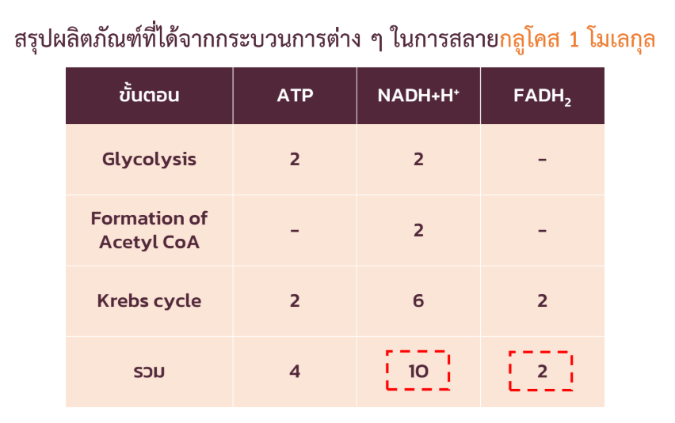
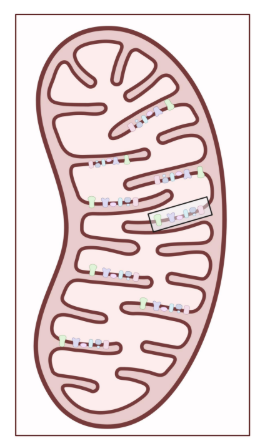
Electron Transport Chain (ETC)
การถ่ายทอดอิเล็กตรอนเกิดขึ้นในเยื่อหุ้มชั้นในและช่องว่างระหว่างเยื่อหุ้มของไมโทคอนเดรีย ค้นพบโดย Albert L. Lehninger-เป็นการนำตัวขนส่งอิเล็กตรอน(NADH และ FADH2)มาเปลี่ยนให้อยู่ในรูปของสารพลังงานสูง (ATP)
บนเยื่อหุ้มชั้นในของไมโทคอนเดรียจะมีกลุ่มของโปรตีนที่ฝังตัวอยู่เรียกว่า คอมเพล็กซ์ (Complex) ซึ่งมี 4 คอมเพล็กซ์ ได้แก่
1. Complex I: NADH: Ubiquinone Oxidoreductase หรือ NADH Dehydrogenase
2. Complex II: Succinate Dehydrogenase
3. Complex III: Cytochrome Complex หรือ Cytochrome c Oxidoreductase
4. Complex IV: Cytochrome Oxidase
นอกจากนี้ยังมี Complex V: ATP Synthase ทำหน้าที่สร้าง ATP
การถ่ายทอดอิเล็กตรอน (ETC)
1. ตัวขนส่งอิเล็กตรอน NADH และ FADH2 ที่ได้จากกระบวนการไกลโคไลซิส การสร้าง Acetyl Coenzyme A และวัฏจักรเครปส์จ่ายอิเล็กตรอนให้คอมเพล็กซ์ต่าง ๆ2. หลังจากนั้นอิเล็กตรอนจะถูกถ่ายทอดระหว่างคอมเพล็กซ์ไปเรื่อย ๆ ซึ่งในระหว่างที่อิเล็กตรอนเคลื่อนที่ จะมีการปลดปล่อยพลังงานออกมาทีละน้อย
3. พลังงานเหล่านั้นจะถูกส่งให้คอมเพล็กซ์ต่าง ๆ นำไปใช้ในการปั๊มโปรตอนจาก Matrix เข้าสู่ช่องว่างระหว่างเยื่อหุ้มของไมโทคอนเดรีย
4. เมื่ออิเล็กตรอนปลดปล่อยพลังงานออกจนหมด อิเล็กตรอนจะหลุดออกจากคอมเพล็กซ์ และมีโมเลกุลของออกซิเจนมารับอิเล็กตรอนนั้น กลายเป็นโมเลกุลน้ำ (H2O)
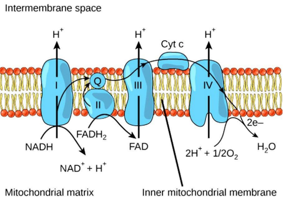
เมื่อมีการปั๊มโปรตอนจาก Matrix มาก ๆ จะทำให้เกิดความแตกต่างของ H ใน 2 บริเวณ คือ มี H ในช่องว่างระหว่างเยื่อหุ้มมากกว่าใน Matrix เกิดแรงที่ผลักให้ H ต้องการลำเลียงกลับมายัง Matrix เรียกแรงนั้นว่า แรงขับเคลื่อนโปรตอน (Proton Motive Force) ทำให้ H ต้องการลำเลียงกลับมายัง Matrix โดย H จะถูกลำเลียงผ่าน ATP Synthase เมื่อ H เคลื่อนที่ผ่าน ATP Synthase จะเกิดแรงหมุนซึ่งเป็นพลังงานที่สามารถนำไปสร้าง ATP ได้ , การเคลื่อนที่ของ H ผ่านเยื่อหุ้ม ตามความเข้มข้นของสารแบบนี้เรียกว่า Chemiosmosis การจ่ายอิเล็กตรอนของ NADH และ FADH2 แล้วทำให้เกิดการสร้าง ATP ควบคู่กัน จัดเป็นการสร้าง ATP แบบ Oxidative Phosphorylation , NADH จะจ่ายอิเล็กตรอนที่ Complex I ส่วน FADH2 จ่ายอิเล็กตรอนที่ Complex II ดังนั้น NADH จึงสามารถปั๊มโปรตอนเข้าสู่ช่องว่างระหว่างเยื่อหุ้มได้มากกว่า ทำให้สร้าง ATP ได้มากกว่า
สรุปก็คือ NADH และ FADH2 จ่ายอิเล็กตรอน ปั๊มโปรตอนจาก Matrix เข้าสู่ช่องว่างระหว่างเยื่อหุ้มมีออกซิเจนเป็นตัวรับอิเล็กตรอนตัวสุดท้าย กลายเป็นน้ำและโปรตอนถูกลำเลียงผ่าน ATP Synthase สร้าง ATP

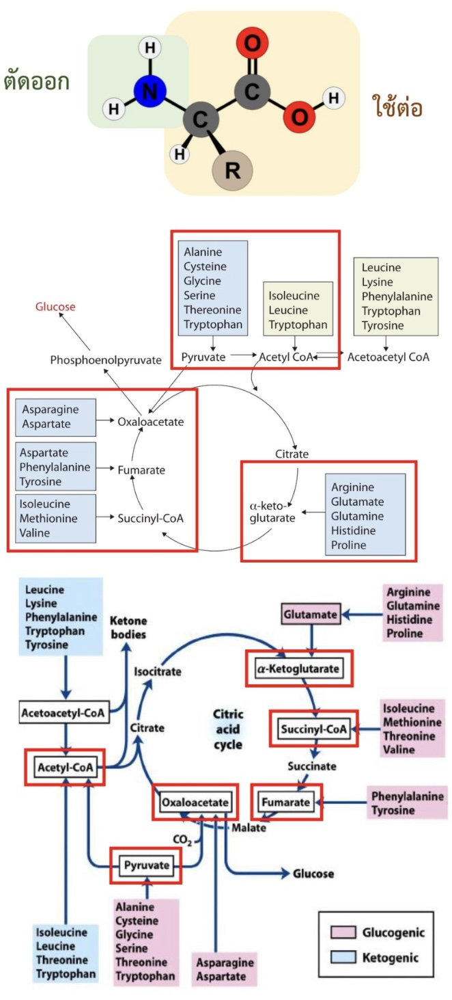
Catabolism of Amino Acids
- กรดอะมิโนทุกชนิดจะถูกตัดหมู่อะมิโน (NH2) แล้วเข้าสู่กระบวนการสลายต่อไป- หมู่แอนิโมที่กำจัดออกจะนำไปสังเคราะห์เป็นยูเรีย เพื่อนำเข้าสู่วัฏจักรยูเรีย (Urea Cycle) แล้วขับออกสู่ภายนอกร่างกาย
กรดอะมิโนมีหลายชนิด ทุกชนิดสามารถเปลี่ยนเป็น Pyruvate, Acetyl CoA และสารตัวกลางในวัฏจักรเครปส์ได้
การสลายไขมัน (Catabolism of Lipids)
- ลิพิดจะถูกย่อยในทางเดินอาหารได้เป็นกรดไขมัน (Fatty Acid) และกลีเซอรอล (Glycerol)- กลีเซอรอลจะถูกเปลี่ยนเป็นสารในไกลโคไลซิส ส่วนกรดไขมันจะถูกเปลี่ยนเป็น Acetyl CoA
กล่าวก็คือ Catabolism of Amino Acids & Lipids กรดอะมิโนจะถูกตัดหมู่อะมิโนออกและเปลี่ยนเป็น Pyruvate, Acetyl CoA หรือสารตัวกลางในวัฎจักรเครปส์ กลีเซอรอลจะถูกเปลี่ยนเป็นสารในไกลโคไลซิสส่วนกรดไขมันจะถูกเปลี่ยนเป็น Acetyl CoA
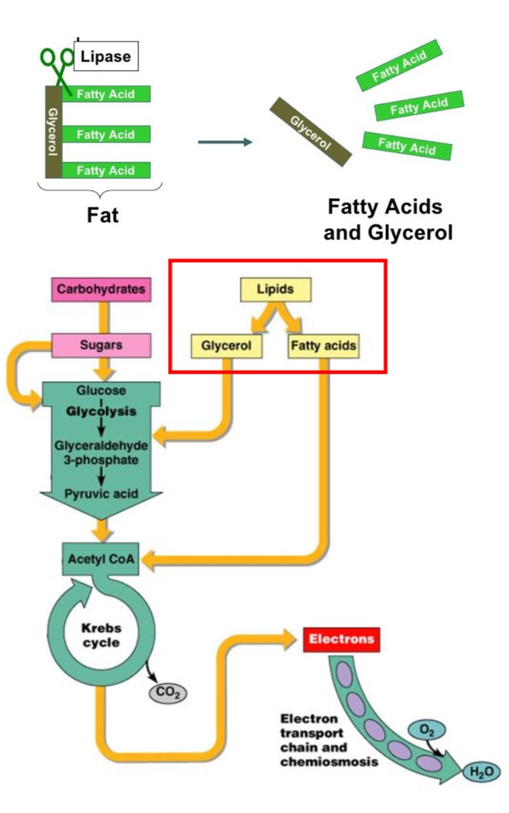
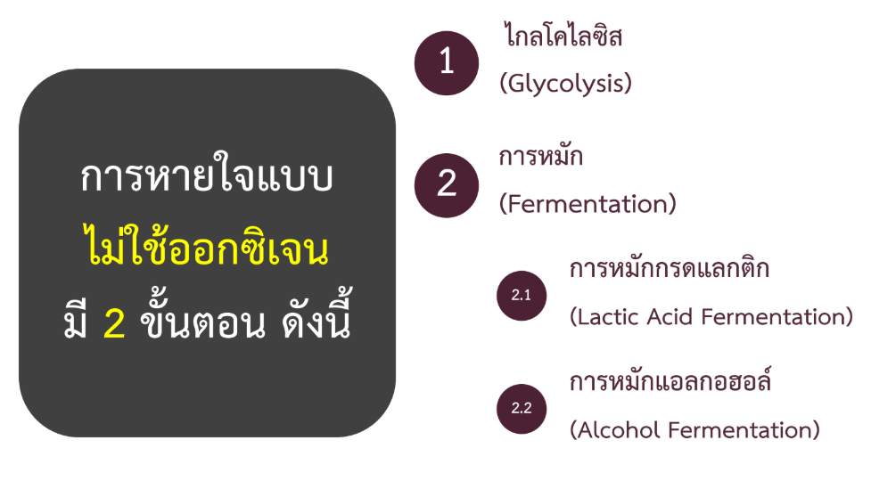
การหายใจแบบไม่ใช้ออกซิเจนมี 2 ขั้นตอน ดังนี้
1. ไกลโคไลซิส (Glycolysis)2. การหมัก (Fermentation)
2.1 การหมักกรดแลกติก (Lactic Acid Fermentation)
2.2 การหมักแอลกอฮอล์ (Alcohol Fermentation)
ซึ่งทั้งหมดที่กล่าวมานั้นเกิดขึ้นใน Cytosol
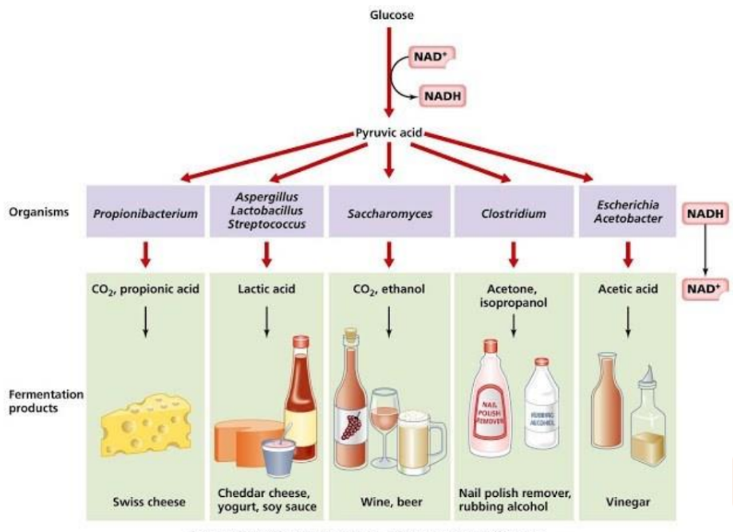
การหมัก (Fermentation)
- พบในแบคทีเรียบางชนิด เช่น ยีสต์ แบคทีเรียใต้ทะเลลึก แบคทีเรียในทางเดินอาหาร- พบในเซลล์กล้ามเนื้อของมนุษย์ในสภาวะที่ออกซิเจนไม่เพียงพอ เช่น การออกกำลังกายอย่างหนัก
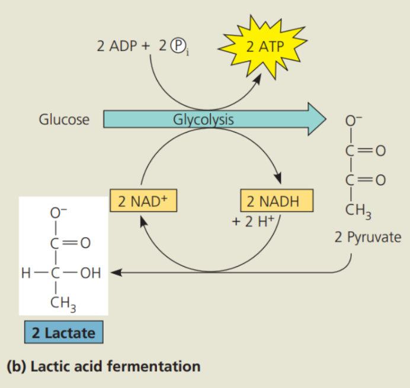
Lactic Acid Fermentation (พบในแบคทีเรียกล้ามเนื้อโครงร่าง)
1. กลูโคสจะเข้าสู่กระบวนการไกลโคไลซิสเปลี่ยนเป็นไพรูเวต แล้วเข้าสู่กระบวนการหมักกรดแลกติก คือ ไพรูเวตจะถูกเปลี่ยนเป็น Lactate หรือ Lactic Acid2. การเปลี่ยนไพรูเวต 1 โมเลกุล ให้เป็น Lactic Acid 1 โมเลกุล จะใช้ 1 NADH ซึ่งได้ผลิตภัณฑ์เป็น NAD เพื่อนำไปหมุนเวียนในกระบวนการไกลโคไลซิสต่อไป
Lactic Acid จะถูกลำเลียงไปที่ตับเพื่อเปลี่ยนเป็นกลูโคสแล้วนำไปใช้ต่อ
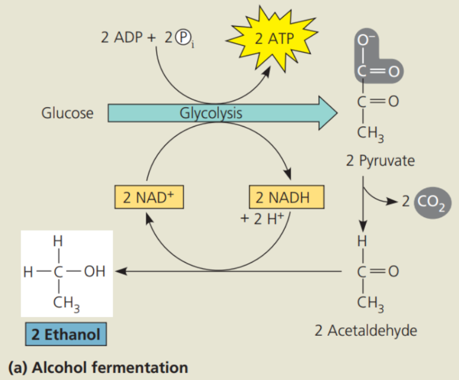
Alcohol Fermentation (พบในยีสต์ พืช แบคทีเรียบางชนิด)
1. เมื่ออยู่ในสภาวะที่ไม่มีออกซิเจน กลูโคสจะเข้าสู่กระบวนการไกลโคไลซิส ถูกเปลี่ยนเป็นไพรูเวต2. ไพรูเวตเข้าสู่กระบวนการหมักแอลกอฮอล์ คือ ไพรูเวตจะถูกเปลี่ยนเป็น Acetaldehyde ได้ CO2 1 โมเลกุล หลังจากนั้น Acetaldehyde จะถูกเปลี่ยนเป็นเอทานอล (Ethanol) โดยใช้ 1 NADH และได้ผลิตภัณฑ์เป็น NAD เพื่อนำไปหมุนเวียนในกระบวนการไกลโคไลซิสเช่นเดียวกัน
Lactic Acid จะถูกลำเลียงไปที่ตับเพื่อเปลี่ยนเป็นกลูโคสแล้วนำไปใช้ต่อ
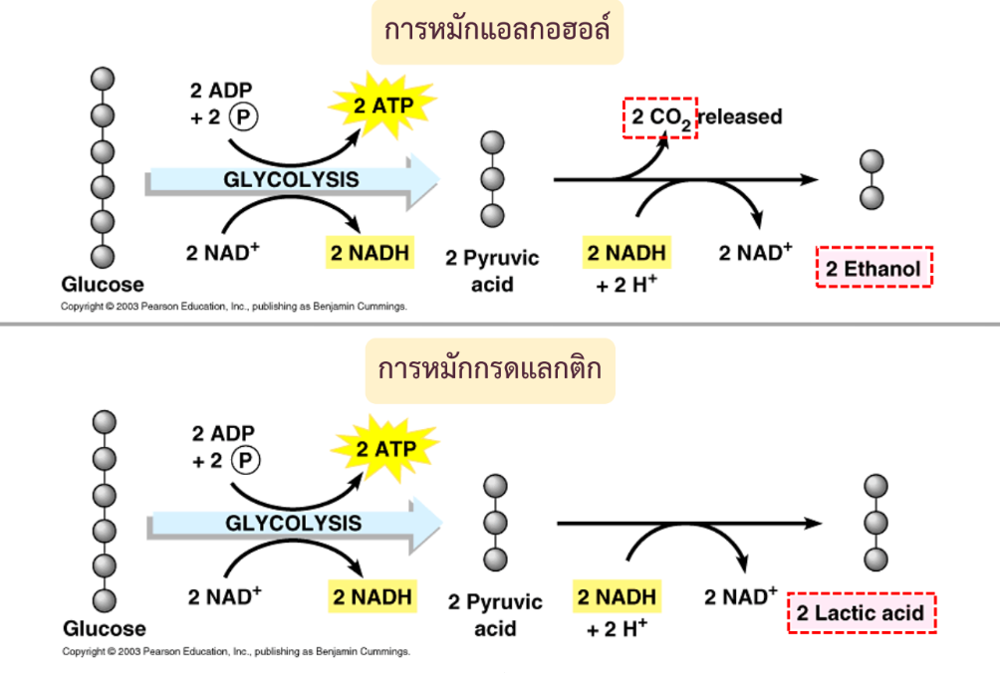